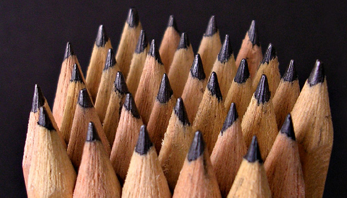
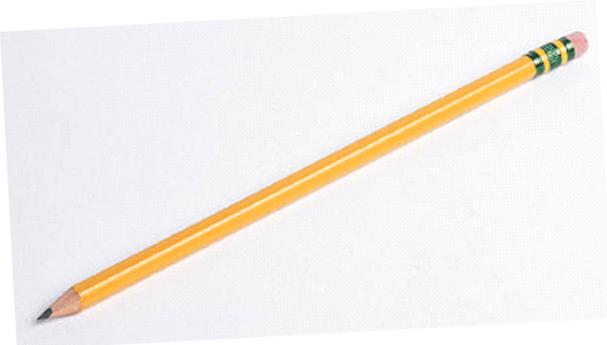
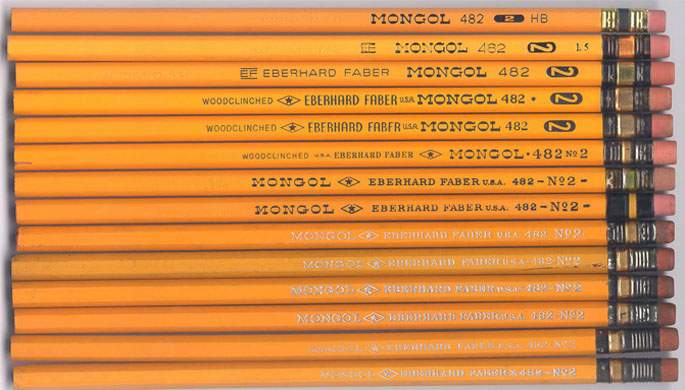
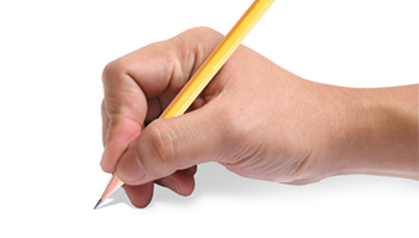
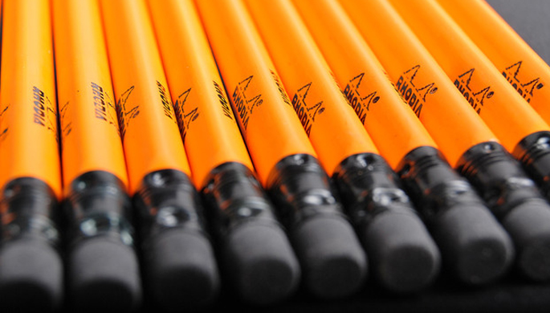

Ngày nay lõi chì được pha trộn than graphite với đất sét (clay). Do liều lượng thay đổi của graphite trên đất sét, những người sản xuất viết chì có thể định được độ cứng của viết chì khi viết trên giấy. Có hai loại bút chì: bút chì thường màu đen và bút chì màu có nhiều màu sắc. Bút chì đen thường được sử dụng để viết nháp hoặc tập viết còn bút chì màu được dùng trong hội họa, tô màu là chủ yếu.
Chữ “H” lấy từ chữ “hard” tức là cứng. Độ cứng có số càng lớn thì viết chì càng cứng, để viết nét thật mảnh và lợt. Cũng như vậy chữ “B” lấy từ chữ “black” tức là đen. Đôi khi họ dùng chữ “F” từ chữ “fine” để chỉ rằng bút chì có thể gọt rất nhọn. Họ cũng có thể để chung các tính chất với nhau, thí dụ viết chì có ghi chữ HB nghĩa là vừa cứng vừa đen, còn có chữ “HH” nghĩa là rất cứng và “HHBBB” là rất cứng và thiệt là đen!
Độ cứng của bút chì tại Việt Nam sử dụng theo hệ thống phân loại độ cứng bút chì Châu Âu hiện đại, trải từ 9H (cứng và nhạt nhất) đến 9B (mềm và đậm nhất). Tuy thang phân loại khá dài nhưng người ta chỉ thường dùng loại từ 2H đến 5B mà thôi.
Mẫu viết chì đầu tiên có gắn cục gôm nơi đầu là do Hyman Lipman ở Philadelphia chế ra năm 1858. Cục gôm đầu tiên làm bằng nhựa cây cao su. Càng ngày gôm được chế bằng cao su nhân tạo và thêm đá bọt (pumice, là loại nham xốp nhẹ dùng để tẩy các vết dơ) nhưng sau đó được thay thế bằng vinyl. Vinyl là một loại chất dẻo bền và dai.
Thời cổ La Mã, các học giả tôn giáo chuyên nghiệp viết trên giấy papyrus với một thanh kim loại có tên là stylus. Sau đó những cây stylus được làm bằng chì. Ngày nay ta gọi là bút “chì” cũng từ cây stylus bằng chì này. Sau khi khai thác mỏ than chì này, việc dùng graphite (than chì) được phổ biến sâu rộng. Graphite để lại dấu đậm hơn nhưng quá mềm và dễ gãy nên nó cần phải có vật để giữ. Đầu tiên những cây graphite được bao bằng dây. Sau đó graphite được đút trong thanh gỗ và khi dùng thì đẩy thanh graphite ra bằng tay. Bút chì được ra đời.| Nơi sản xuất | La Mã cổ đại. |
| Độ dài | 25 cm |
| Tính năng | • Đen, đẹp việt mềm mại. • Có thể dùng để gải quyết mâu thuẫn. |
| Website | Chi tiết. |